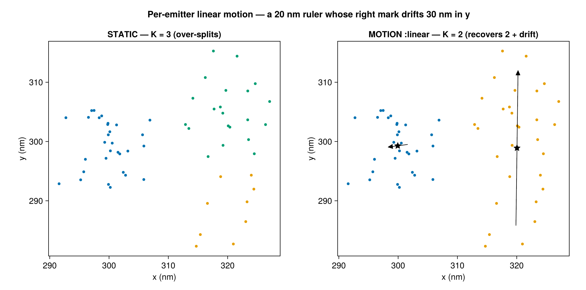
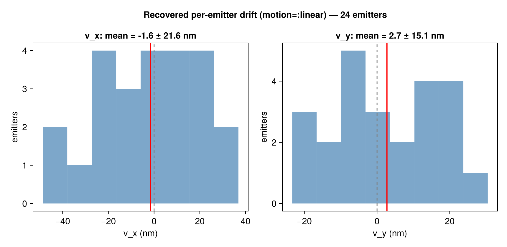

Per-Emitter Linear Motion
By default BaGoL assumes each emitter is static — its blinks scatter around one fixed position. But an emitter can move during the acquisition: a residual drift the global drift-correction missed, or a genuinely mobile molecule in a live cell. When that happens, a single emitter's blinks spread along a track, and the static model — seeing "too much" spread for the reported precision — over-splits one emitter into several.
The optional linear-motion model (motion=:linear, default off) lets each emitter drift linearly in time and integrates the motion out in closed form, so the grouping search stays a discrete collapsed sampler. It recovers the moving emitter as one object and reports the recovered drift.

A 20 nm ruler whose right mark drifts 30 nm in y. The static model (left) over-splits the drifting mark into several emitters; motion=:linear (right) recovers the two marks 20 nm apart, each annotated with its recovered end-to-end drift vector — large for the moving mark, ≈0 for the static one.
The model
Each emitter k has a position at the reference time, μ_k, and a velocity v_k. Its position at the time of localization i is
\[\boldsymbol{\theta}_k(t_i) = \boldsymbol{\mu}_k + \mathbf{v}_k\, \delta_i , \qquad \delta_i = \frac{\mathrm{frame}_i - t_0}{\mathrm{span}} \in \left[-\tfrac12, \tfrac12\right],\]
with a global time reference t_0 (mid-acquisition) and span (the frame range), so μ_k means "position at mid-acquisition" (comparable across emitters) and v_k is the end-to-end displacement over the whole acquisition. Localization i is then
\[\mathbf{y}_i \sim \mathcal{N}\!\big(\boldsymbol{\mu}_{z_i} + \mathbf{v}_{z_i}\delta_i,\ \Sigma_i\big).\]
The latent $\boldsymbol{\beta}_k = [\boldsymbol{\mu}_k;\ \mathbf{v}_k]$ is given a flat prior on $\boldsymbol{\mu}$ (as the static model) and a zero-mean Gaussian prior on the velocity, $\mathbf{v}_k \sim \mathcal{N}(\mathbf 0,\ \Sigma_v)$ with precision $\Lambda_v = \Sigma_v^{-1}$. The prior scale is motion_sigma — the per-axis end-to-end drift SD in μm.
Integrating out the motion
Per cluster this is a Bayesian linear regression of position on time: with design $X_i = [\,I\ \ \delta_i I\,]$ the model is $\mathbf y_i = X_i\boldsymbol\beta + \boldsymbol\varepsilon_i$, $\boldsymbol\varepsilon_i\sim\mathcal N(0,\Sigma_i)$, which is linear-Gaussian — so $\boldsymbol\beta$ integrates out exactly. The sufficient statistics extend the static $\{A=\sum_i\Lambda_i,\ \boldsymbol\eta=\sum_i\Lambda_i\mathbf y_i,\ q,\ n\}$ with the time-weighted blocks
\[\mathrm{Bm} = \sum_i \delta_i \Lambda_i, \quad C = \sum_i \delta_i^2 \Lambda_i, \quad \boldsymbol\eta_\delta = \sum_i \delta_i \Lambda_i \mathbf y_i ,\]
all still $O(1)$ to add/remove. Via the Schur complement the cluster marginal is the static marginal plus a small velocity correction:
\[\log p_{\text{motion}}(\mathbf y_c) = \log p_{\text{static}}(\mathbf y_c) \;+\; \tfrac12\, \mathbf r^\top S^{-1}\mathbf r \;-\; \tfrac12\log|S| \;+\; \tfrac12\log|\Lambda_v| ,\]
\[S = C + \Lambda_v - \mathrm{Bm}^\top A^{-1}\mathrm{Bm}, \qquad \mathbf r = \boldsymbol\eta_\delta - \mathrm{Bm}^\top A^{-1}\boldsymbol\eta .\]
This reduces exactly to the static marginal as the velocity prior tightens ($\sigma_v\to 0$, i.e. $\Lambda_v\to\infty$) and at $n=1$ — so motion is a strict, opt-in generalization, not a different model. A proper $\Lambda_v$ keeps $S$ positive definite even when blinks span a short time window or a cluster has one localization.
The whole construction is dimension-parametric: $A$, $\mathrm{Bm}$, $C$, $\Lambda_v$ are $D\times D$ and $\boldsymbol\beta\in\mathbb R^{2D}$. The marginal and cluster statistics are verified in both 2D (Emitter2DFit) and 3D (Emitter3DFit) via the feature-dimension dispatch, so the model is dimension-agnostic. The full run_bagol output pipeline (partitioning + MAP-N) is 2D — a general run_bagol limitation independent of motion; for 3D motion use run_collapsed_chain directly.
Recovered velocity output
When motion=:linear, each recovered emitter carries a posterior velocity $\hat{\mathbf v}_k$ (and position $\hat{\boldsymbol\mu}_k$ at the reference time) from $\hat{\boldsymbol\beta} = B^{-1}\mathbf b$. These are summarized in the diagnostics:
result, diag = run_bagol(smld; motion=:linear, motion_sigma=0.002)
diag.motion.velocities # N×D matrix of recovered v̂ per emitter (μm)
diag.motion.velocity_var # N×D per-axis velocity posterior variance Σv (μm²)
diag.motion.n # per-emitter member count
diag.motion.axis_mean # per-axis mean drift (μm)
diag.motion.axis_std # per-axis std (μm)write_report prints the per-axis mean ± std of the recovered drift, and plot_report writes a $v_x$ / $v_y$ ($/v_z$) motion_velocities.png histogram — the QC view of how much, and along which axis, emitters drifted. The histogram shows emitters with velocity leverage ($n \ge 2$); an $n=1$ emitter has $\hat{\mathbf v}\equiv 0$ (no time information). Each $\hat{\mathbf v}_k$ is itself the precision-weighted posterior mean (data vs. prior), and the per-emitter $\Sigma_v$ and $n$ are exposed so downstream code can gate ($n \ge N$) or weight the population however it likes.

Recovered end-to-end drift (v_x, v_y) across a field of rulers, with the mean (red) marked. The spread shows how much residual motion the run absorbed per axis.
When to use it — and the risk
Use it for: live-cell or mobile emitters; long acquisitions where an emitter moves appreciably; data where the static model visibly over-splits a single emitter along a time-ordered track. It needs per-localization frame values spanning the acquisition (frame-connected data) — without temporal leverage the model is a no-op.
Leave it off (default) for: fixed-cell dSTORM/PALM after good global drift correction (static emitters), where the term is pure overfitting risk.
The risk (why it is opt-in and default off): a loose velocity prior can merge two distinct static emitters that are active in different time windows into one "moving" emitter — a line through time bridging spatially-separated clusters the static model would correctly resolve. Keep motion_sigma to the genuinely-expected drift; the default 0.002 (2 nm) is deliberately tight. If residual global drift is the concern, fix it upstream — per-emitter slopes would each absorb the shared trend and mask it.
# Opt-in via the kwarg or the config
run_bagol(smld; motion=:linear, motion_sigma=0.002)
run_bagol(smld, BaGoLConfig(motion=:linear, motion_sigma=0.002))